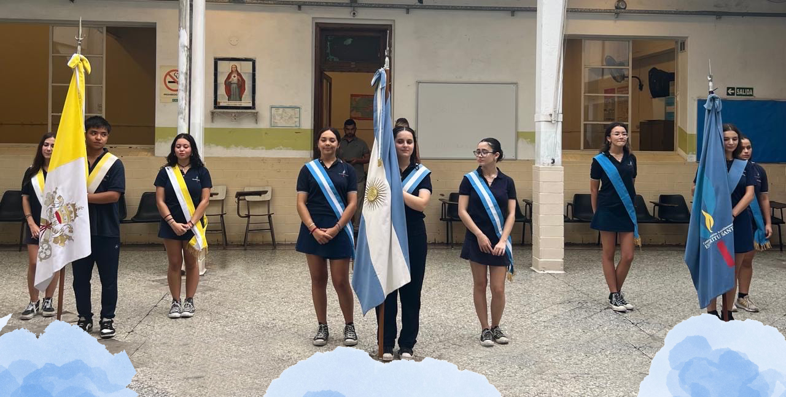

Inicio del Ciclo Lectivo 2025
Por Sofía Cosco y Lara Ruejas Curso 5to B
El día miércoles cinco de marzo comenzó el ciclo lectivo 2025 en el CEAES. A las 7:30 horas se abrieron las puertas para el ingreso de todos los alumnos y docentes. El rector Lic. Ricardo Barboza recibió a todos con un discurso de bienvenida. A continuación se presentaron las banderas de ceremonia formadas por alumnos de quinto año. En la bandera Nacional: Abanderada Camila Lipezker, primera escolta Lara Ruejas Silva y segunda escolta Juana Felippelli. En la bandera Papal: Abanderado Tadeo Contreras, primera escolta Mora Móline y segunda escolta María Victoria Cadena González. En la bandera del CEAES: Abanderada Sofía Cosco, primera escolta Camila Martina Cabral y segunda escolta Victoria García de Olivera. Al completar el ingreso de las banderas de ceremonia, se entonó el Himno Nacional Argentino. Al finalizar, se retiraron los abanderados, se hizo una oración en comunidad. La Directora de Estudios, Yanina Rumacho, indicó las aulas correspondientes de cada año, empezando así el primer día del ciclo lectivo.